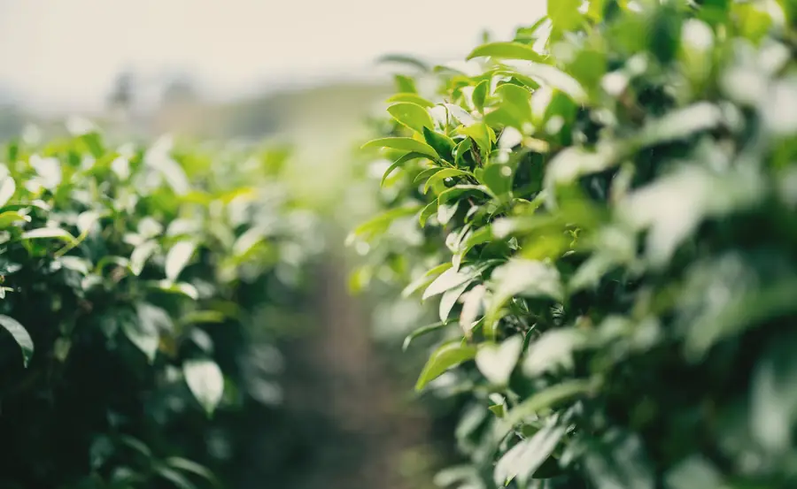
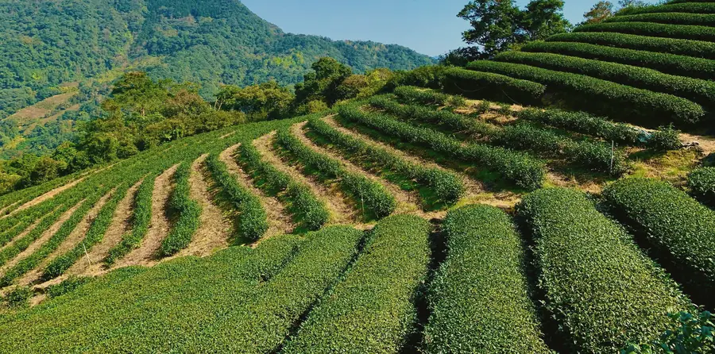
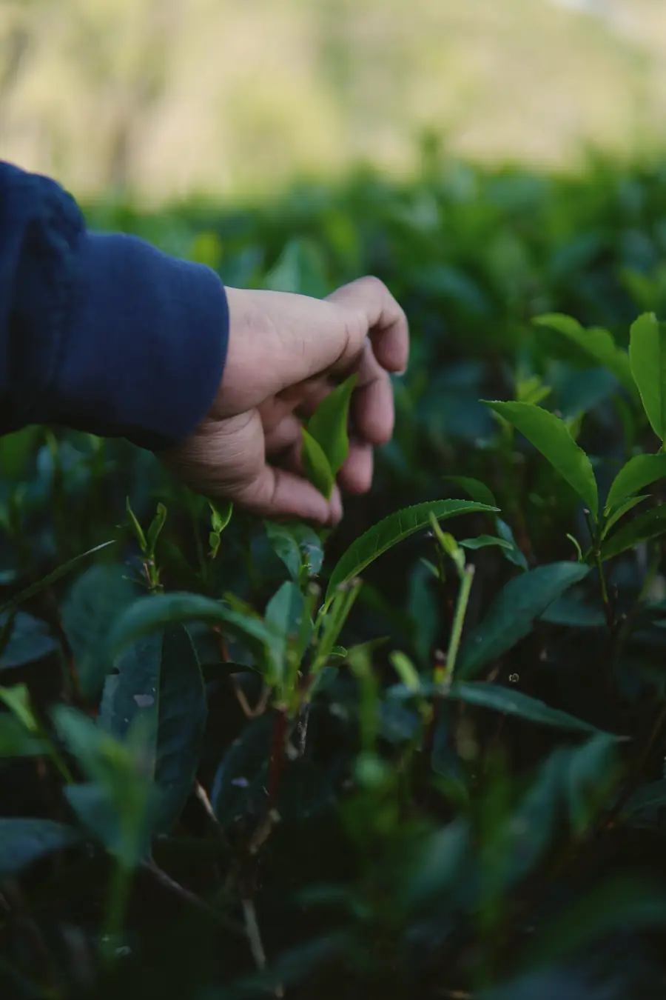
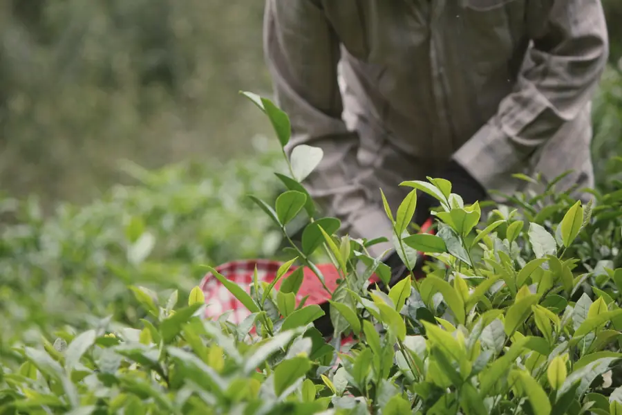
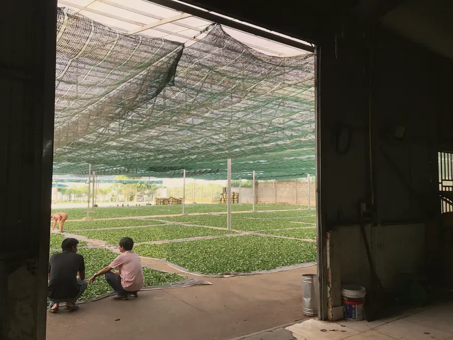
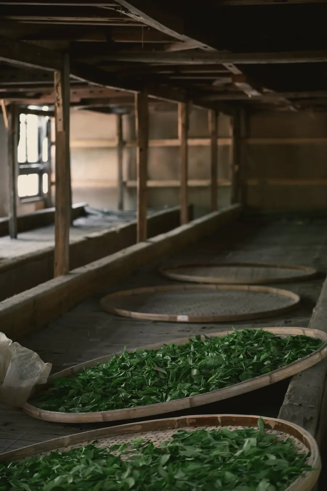
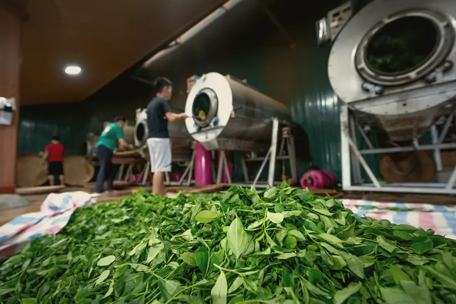
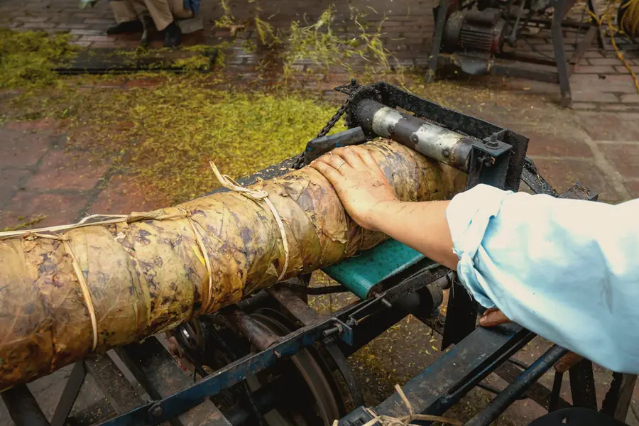
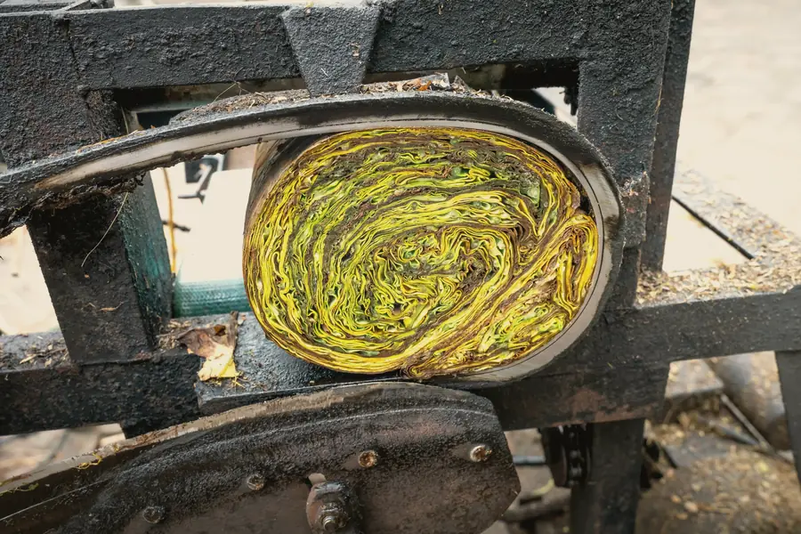
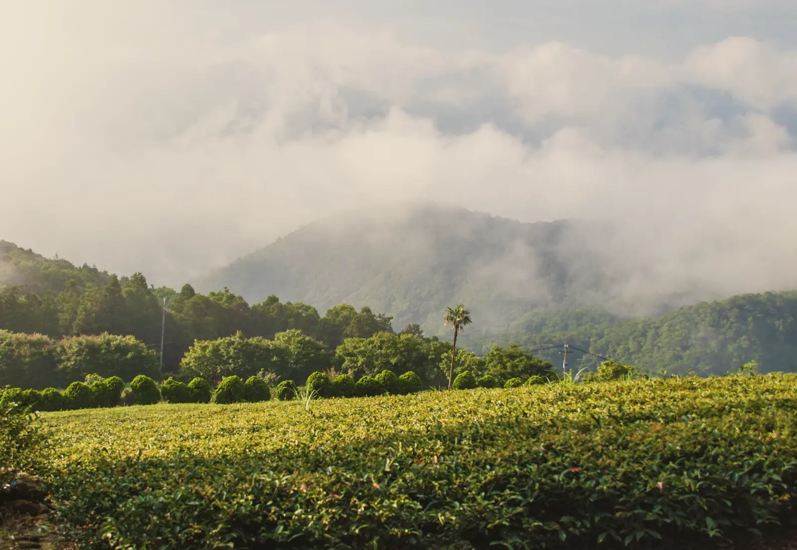

A family garden in the Alishan range of Chiayi County, Taiwan. Most afternoons from May the cloud comes up the valley and sits on the rows, which is why the leaf grows slowly and why it tastes the way it does.
Altitude
1,300 m
Cultivar
Qingxin oolong
Picked
21 April 2026


The bushes
Small leaf, slow growth.
Qingxin is the old oolong cultivar of Taiwan's mountains: a small, thick leaf that grows slowly in the cold and gives less of it. The garden picks twice a year, in spring and early winter. We buy the spring pick only, when the leaf has had the whole cool season to build its sugars.
That slowness is also why a rolled knot of it opens so wide in the pot. A thick spring leaf holds its shape through two days of rolling.
From bush to knot in three days.
This is how rolled oolong is made wherever it is made well. Our garden does every step itself: nothing leaves the mountain until it is a finished, roasted oolong.


Day one, morning
Picked, by hand
A bud and the three leaves under it, snapped at the stem, into a basket on the hip. Picking starts once the dew has burnt off; wet leaf bruises in the basket and turns before anyone means it to.


Day one, afternoon
Withered, then tossed
Spread thin under shade cloth for the last of the sun, then indoors onto bamboo trays. Every hour or so into the night the leaf is tossed by hand, so the edges bruise and begin to oxidise while the middle stays green. The room starts to smell of orchid; that smell is the signal to stop.

Day one, night
Fixed in the drum
A few minutes in a hot rotating drum stops the oxidation exactly where the tossing left it. After this the leaf is soft and can be shaped without tearing.


Days two and three
Rolled in cloth, 36 times
The leaf is wrapped in a cloth sack, twisted into a tight ball and pressed; then the ball is broken up, the leaf warmed, and it is wrapped and pressed again. Round after round the leaf folds on itself until it is a dark knot. This is the step that makes it unfurl in your pot, and the one that ruins it if the maker rushes: a leaf rolled too dry cracks instead of folding.

August and September
Two roasts over longan charcoal.
Fresh from rolling the oolong is green, floral and a little sharp. The garden roasts it in bamboo baskets over banked longan-wood charcoal, 12 hours at a time, rests it, and roasts it again. Ours was roasted on 28 August and 4 September 2026. The roast is where the amber in the pot, the brown sugar and the dried longan come from.
This year's lot.
We buy one lot a year and sell it until it is gone. The arithmetic of it:
270 kgof fresh leaf picked in April
÷ 4.5fresh leaf to finished oolong, by weight
= 60 kgof finished, roasted leaf
= 600tins of 100 g, packed in Singapore
24 hover longan charcoal on the way, in 2 roasts
Why one garden
Because the tin can say exactly what's in it.
A blend can taste the same every year. A single garden can't, and we would rather tell you which spring you are drinking than pretend otherwise. When this lot sells out, the next one is next spring's.